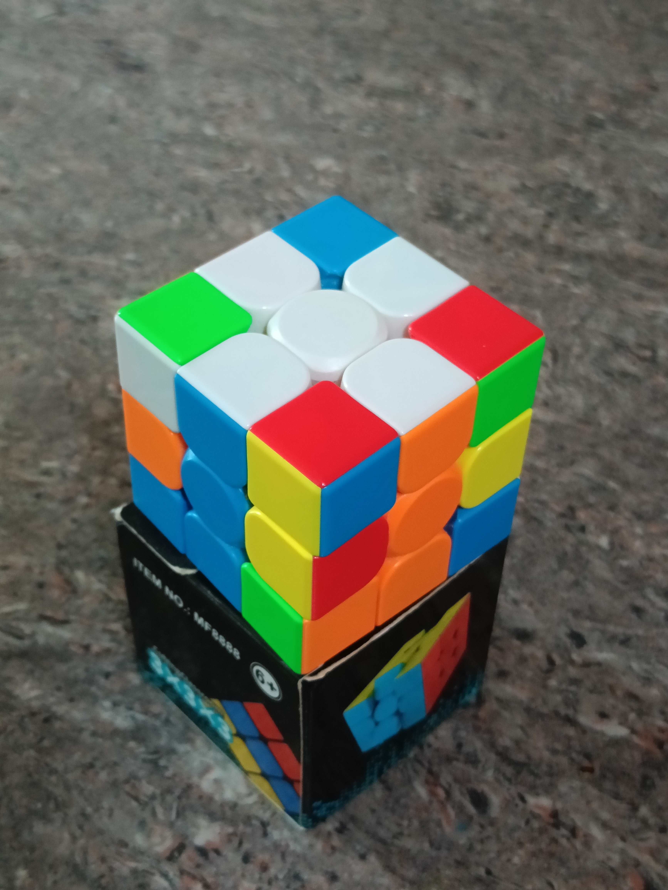

1
Make the White Cross
Start by creating a white cross around the white center. Each white edge must also match the colour of the center piece on the adjacent side.
There is no single algorithm required for this step. Instead, use simple turns to bring the four white edges into the correct positions.
Goal:
A white cross with all four side colours matching
their center pieces.
